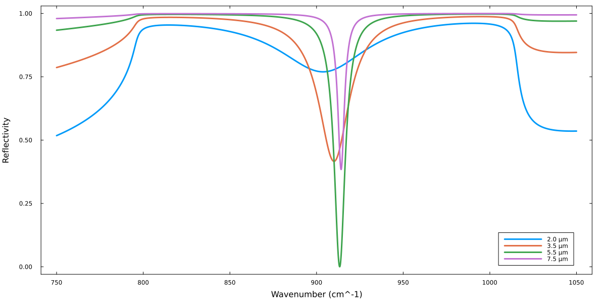

SPhP resonance in 6H-SiC excited in the Otto geometry
using GeneralizedTransferMatrixMethod
using Plots
using Unzip
using LinearAlgebra # For Diagonal()
# Import useful predefined units
# (otherwise one could write, e.g. u"cm")
using Unitful: cm, μm, °
default(
lw=3,
label=:none,
framestyle=:box,
grid=false,
size = (1200,600),
bottom_margin=5Plots.mm,
left_margin=5Plots.mm,
right_margin=5Plots.mm
)
# Refractive index of KRS5 taken from:
# https://refractiveindex.info/?shelf=other&book=TlBr-TlI&page=Rodney
function n_KRS5(λ)
x = λ * 1e6
sqrt(
1 + 1.8293958./(1-0.0225./x.^2) +
1.6675593./(1-0.0625./x.^2) +
1.1210424./(1-0.1225./x.^2)+
0.04513366./(1-0.2025./x.^2)+
12.380234./(1-27089.737./x.^2)
)
end
# Define KRS5 layer
@permittivity "KRS5" x -> n_KRS5(x)^2 * Diagonal(ones(3));
# Function to build structures
S(d_air) = LayeredStructure(
superstrate= KRS5(),
layers = [Layer(d=d_air)],
substrate=SiC()
)
# We are only interested in Rₚₚ, so we write a function to extract it
# (ₚ can be typed by typing \_p<tab>)
function Rₚₚ(k, α, gap)
R_PP, _, _, _ = calculate_reflection(k, α, S(gap))
R_PP
end
# Wavenumbers
ks = (750:0.1:1050)cm^-1
# Air gaps
gaps = [2, 3.5, 5.5, 7.5]μm
result = [Rₚₚ(k_i, 30°, g_i) for k_i in ks, g_i in gaps]
plot(
ks, result,
xlabel = "Wavenumber", ylabel = "Reflectivity",
label = gaps'
)